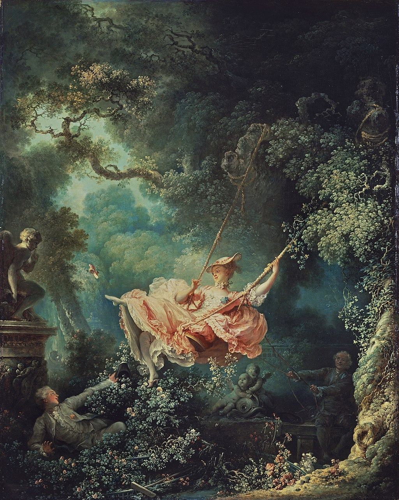

<head>
<meta charset="UTF-8" />
<meta name="keywords" content="drawing, painting" />
<meta name="description" content="drawings by Sunjy" />
<title>Sunjy</title>
<link rel="shortcut icon" type="image/x-icon" href="../../mImages/mCommon/favicon.ico" media="screen" />
<link rel="stylesheet" type="text/css" href="../../mCsses/mCommon/mCssA.css" />
<link rel="stylesheet" type="text/css" href="../../mCsses/mCommon/mCssB.css" />
<link rel="stylesheet" type="text/css" href="../../mCsses/mCommon/mCssC.css" />
<link rel="stylesheet" type="text/css" href="../../mCsses/mCommon/mCssD.css" />
<link rel="stylesheet" type="text/css" href="../../mCsses/mContent/mCssA.css" />
<link rel="stylesheet" type="text/css" href="../../mCsses/mContent/mCssB.css" />
<link rel="stylesheet" type="text/css" href="../../mCsses/mContent/mCssC.css" />
<link rel="stylesheet" type="text/css" href="../../mCsses/mContent/mCssD.css" />
</head>
<script type="text/javascript" src="../../mScripts/mContent/mContentAA.js" /></script>
<script type="text/javascript" src="../../mScripts/mContent/mContentAB.js" /></script>
<script type="text/javascript" src="../../mScripts/mContent/mContentAC.js" /></script>
<script type="text/javascript" src="../../mScripts/mContent/mContentAD.js" /></script>
<script type="text/javascript"></script> 
<script type="text/javascript">
document.write('<div class="mImgAbsolute"></div>');
/*
document.write('<p class="mFontSizeBColor" />From a white paper...</p>');
document.write('<table class="center"><tr><td>');
document.write('');
document.write('</td></tr></table>');
*/
</script>


<script type="text/javascript">
document.write('<p class="mFontSizeBColor" />The Happy Accidents of the Swing</p>');
document.write('<p class="mFontSizeSColor" />“The Happy Accidents of the Swing” by Jean-Honoré Fragonard depicts an elegant young woman on a swing with two men on either side of the swing.<br><br>An enthusiastic young man is hiding in the bushes watching her from a vantage point that allows him to see up into her billowing dress.<br><br>He is clearing the flower bush with his hat for a better view. As the young lady swings higher, she throws her left leg up, allowing her shoe to fly through the air.<br><br>An older man in the shadows on the right is propelling and guiding the swing with a pair of ropes. The older man appears to be unaware of the younger man.<br><br>Fragonard has added two statues in the form of putti, depicted as a chubby male child, to the composition to elaborate the narrative.<br><br>The putto above the young man on the left has its finger in front of its lips in a sign of silence or secrecy. The pair of putti, who watch from beside the older man on the right, represents a couple.<br><br>To further demonstrate the young woman’s intentions, the small dog at the older man’s feet is shown barking.<br><br>This painting is also known as “The Swing,” is considered to be one of the masterpieces of the Rococo era and is Fragonard’s best-known work. T<br><br>he style of the painting was characteristic of the French Rococo period and was favored by the wealthy art patrons of the 1780s.<br><br>This style of “frivolous” painting soon became the target of the philosophers of the Enlightenment, who demanded a more serious art to show the nobility of man.<br><br>The dominant French culture was highly influential on Fragonard’s themes, which were mostly erotic, secretive romance or love scenes, painted for Louis XV’s pleasure-loving court’s enjoyment.<br><br>Rococo<br><br>The Rococo style began in France in the first part of the 18th century in the reign of Louis XV as a reaction against the more formal and geometric form.<br><br>It soon spread to other parts of Europe, mainly northern Italy, Bavaria, Austria, other parts of Germany, and Russia. It also came to influence the other arts, particularly sculpture, furniture, silverware and glassware, painting, music, and theatre.<br><br>Putto<br><br>A putto is a figure depicted as a chubby male child, usually naked and sometimes winged. Initially symbolizing worldly passions, the putto came to represent the sacred cherub. In Baroque art, the putto came to represent the omnipresence of God.<br><br>The iconography of putti is fluid so that it is difficult to tell the difference between putti, cupids, and various forms of angels.<br><br>They have no unique, immediately identifiable attributes, so that putti may have many meanings and roles in the context of art.<br></p>');
document.write('<table class="center" /><tr><td>');
document.write('<br>An enthusiastic young man is hiding in the bushes watching her from a vantage point that allows him to see up into her billowing dress.<br><br>He is clearing the flower bush with his hat for a better view. As the young lady swings higher, she throws her left leg up, allowing her shoe to fly through the air.<br><br>An older man in the shadows on the right is propelling and guiding the swing with a pair of ropes. The older man appears to be unaware of the younger man.<br><br>Fragonard has added two statues in the form of putti, depicted as a chubby male child, to the composition to elaborate the narrative.<br><br>The putto above the young man on the left has its finger in front of its lips in a sign of silence or secrecy. The pair of putti, who watch from beside the older man on the right, represents a couple.<br><br>To further demonstrate the young woman’s intentions, the small dog at the older man’s feet is shown barking.<br><br>This painting is also known as “The Swing,” is considered to be one of the masterpieces of the Rococo era and is Fragonard’s best-known work. T<br><br>he style of the painting was characteristic of the French Rococo period and was favored by the wealthy art patrons of the 1780s.<br><br>This style of “frivolous” painting soon became the target of the philosophers of the Enlightenment, who demanded a more serious art to show the nobility of man.<br><br>The dominant French culture was highly influential on Fragonard’s themes, which were mostly erotic, secretive romance or love scenes, painted for Louis XV’s pleasure-loving court’s enjoyment.<br><br>Rococo<br><br>The Rococo style began in France in the first part of the 18th century in the reign of Louis XV as a reaction against the more formal and geometric form.<br><br>It soon spread to other parts of Europe, mainly northern Italy, Bavaria, Austria, other parts of Germany, and Russia. It also came to influence the other arts, particularly sculpture, furniture, silverware and glassware, painting, music, and theatre.<br><br>Putto<br><br>A putto is a figure depicted as a chubby male child, usually naked and sometimes winged. Initially symbolizing worldly passions, the putto came to represent the sacred cherub. In Baroque art, the putto came to represent the omnipresence of God.<br><br>The iconography of putti is fluid so that it is difficult to tell the difference between putti, cupids, and various forms of angels.<br><br>They have no unique, immediately identifiable attributes, so that putti may have many meanings and roles in the context of art.<br>" />');
document.write('</td></tr></table>');
</script>


